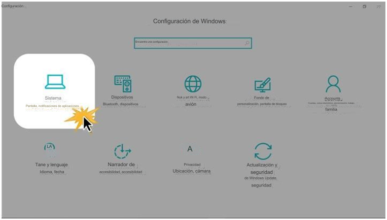

Paso 1:
al principio menú , haga clic en el icono Configuración , que puedes fácilmente reconocer porque él es conformado como un engranaje.
Paso 2:
Su Se abrirá la aplicación de configuración del dispositivo . Allí haga clic en el Sistema opción

Paso 3:
Vas a ver las opciones de configuración . Haga clic en Multitarea en el lado izquierdo de la ventana.
Paso 4:
En el lado derecho podrás activar o desactivar las opciones de anclaje de ventanas simplemente haciendo clic sobre ellas.
También puedes configurarlo si lo deseas presionando Alt. + Pestaña para mostrar ventanas abiertas en todos los escritorios o solo en uno estás usando.)